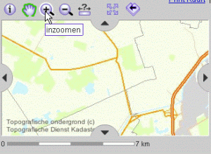

De kaartschaal
De kaartschaal geeft de verhouding aan tussen een afstand in de kaart en in de werkelijkheid. De gewone papieren kaart heeft altijd een bepaalde kaartschaal, bijvoorbeeld 1:100.000 (spreek uit: één op honderdduizend). In dit voorbeeld komt 1 centimeter in de kaart overeen met 1 kilometer in werkelijkheid.De kaart die weergegeven wordt door de Kaartviewer kent geen vaste kaartschaal. Het is een dynamische kaart aangezien u zelf bepaalt of een groot of juist klein gebied getoond moet worden. En met dynamisch wordt ook bedoeld dat het kaartbeeld zich daarbij aanpast en dus niet altijd hetzelfde weergeeft. Wanneer de Kaartviewer een gehele provincie laat zien is het immers onmogelijk gewone straten te laten zien. Alleen de belangrijkste grote wegen zullen in dat geval zichtbaar zijn.
De onderstaande drie afbeeldingen laten het effect op het gepresenteerde kaartbeeld zien bij inzoomen op het meertje ongeveer in het midden van de kaart.
Stap 1; Activeren van de inzoomen knop:

Stap 2; Aangeven van het gebied waarop ingezoomd moet worden door slepen met de muis:
Stap 3; Resulterend kaartbeeld na de inzoom actie:
De Kaartviewer geeft de kaartschaal weer door middel van een schaalbalk:
Merk op dat de schaalbalk voor het inzoomen een lengte aangaf van 7 kilometer in de kaart en daarna van slechts 1 kilometer.
Of bepaalde objecten in de kaart wel of niet getoond worden is, zoals gezegd, afhankelijk van de kaartschaal. De legenda past zich automatisch aan bij de huidige kaartschaal. Met andere woorden het kaartbeeld en de legenda zijn schaalafhankelijk.
 Onderdelen in de legenda die niet getoond kunnen worden bij de huidige kaartschaal zullen geen afbeelding hebben zoals hier afgebeeld.
Onderdelen in de legenda die niet getoond kunnen worden bij de huidige kaartschaal zullen geen afbeelding hebben zoals hier afgebeeld.
 Wanneer wel voldoende is ingezoomd zal de kaartlaag wel getoond worden in de kaart wat te zien is aan het verschijnen van de bijbehorende afbeelding bij het legenda onderdeel.
Wanneer wel voldoende is ingezoomd zal de kaartlaag wel getoond worden in de kaart wat te zien is aan het verschijnen van de bijbehorende afbeelding bij het legenda onderdeel.